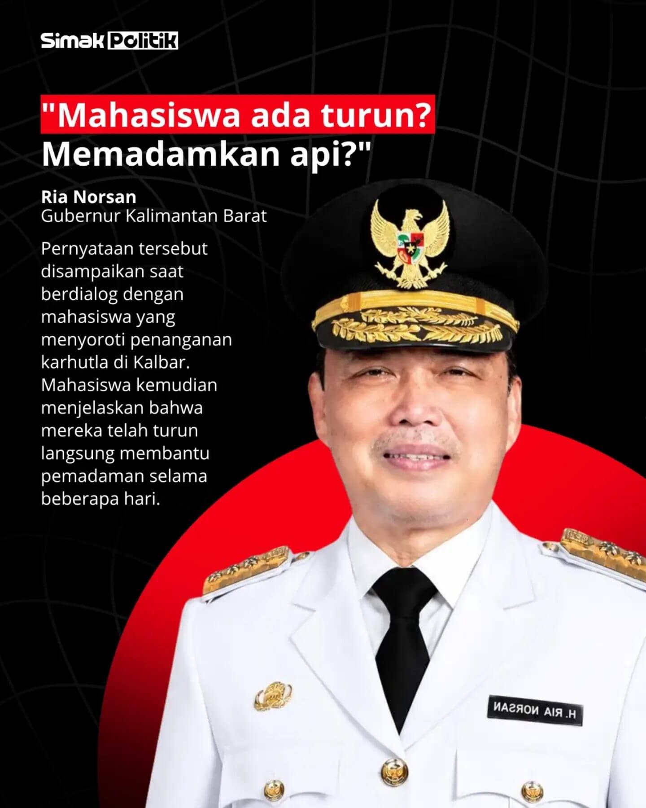
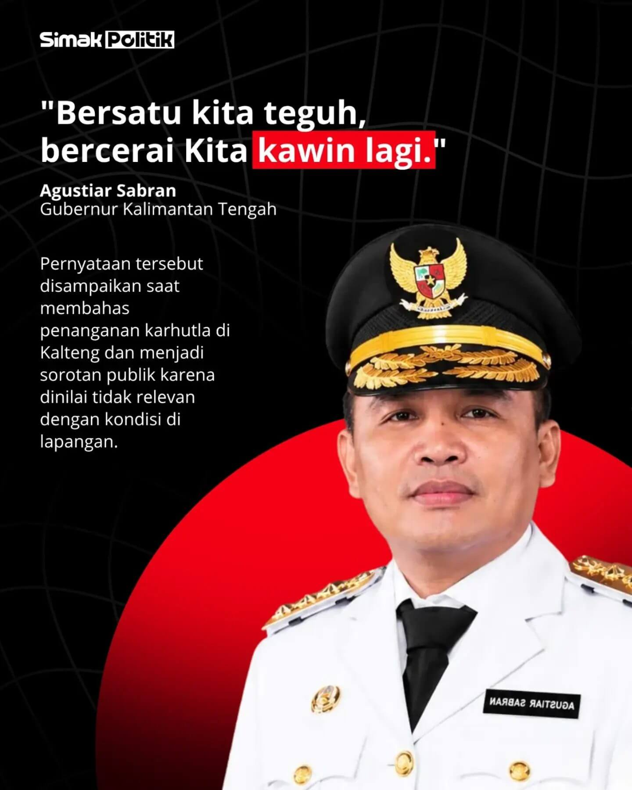
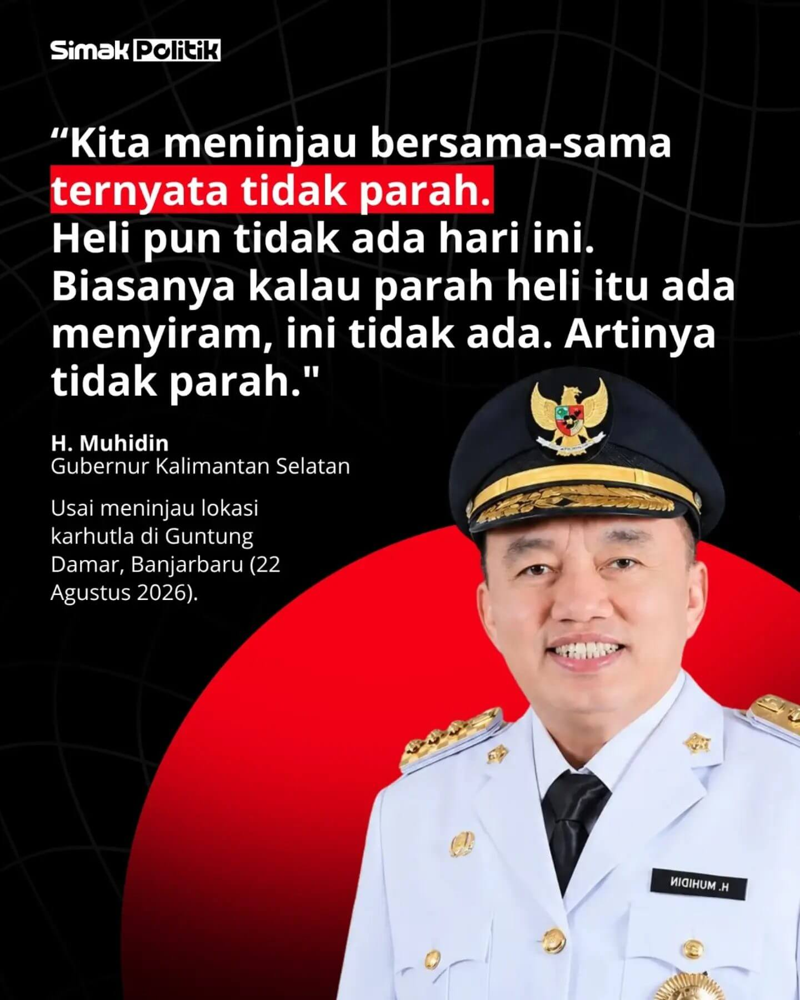

Hotspot Kalimantan*
≥5.257
titik panas • 11 Oktober 2026
Kalteng, Kalbar, Kalsel • 3 provinsi terlapor
Memantau program-program besar pemerintah melalui data dan pemberitaan dari media tepercaya. Edisi ini berfokus pada karhutla Kalimantan, dampaknya bagi masyarakat, serta respons pemerintah dan negara tetangga.
Snapshot terbaru per provinsi dari BPB-PK/SIPongi dan BPBD. Tingkat kepercayaan serta periode antarsumber tidak sama; angka tidak boleh langsung dijumlahkan.
Grafik menggunakan titik waktu yang punya angka publik terverifikasi. Garis tidak mengisi hari kosong dengan estimasi.
Kalteng + Kalbar + Kalsel • 14 Sep–10 Okt 2026
Kumulatif negara dengan laporan dampak yang mengaitkan asap ke kebakaran Kalimantan
Headcount resmi pada 7 provinsi terdampak • bukan hanya Kalimantan
Angka kuantitatif yang dapat diverifikasi, bukan estimasi total populasi terpapar
Kasus kumulatif pada wilayah karhutla yang dilaporkan pemerintah
Malaysia • URTI pada 78 fasilitas Kementerian Kesehatan
 Foto: Monitor Indonesia • dokumentasi Syahganda Nainggolan
Foto: Monitor Indonesia • dokumentasi Syahganda Nainggolan
 Foto: dokumentasi helikopter Jepang • via detik
Foto: dokumentasi helikopter Jepang • via detik
Geser dengan jari, tarik dengan mouse, atau gunakan tombol panah.
Kumpulan gambar dan kutipan dari Simak Politik ditampilkan pada masing-masing kartu. Foto kolase utama berasal dari NOWDOTS. Gunakan tombol penjelasan untuk membaca konteks ringkas; sumber gambar dan kutipan tersedia pada tautan di bawah.

Foto & kutipan: Simak Politik / Instagram“Mahasiswa ada turun? Memadamkan api?”
Pernyataan disampaikan ketika berdialog dengan mahasiswa yang menyoroti penanganan karhutla di Kalimantan Barat. Mahasiswa menyampaikan bahwa mereka telah membantu pemadaman selama beberapa hari. Klik untuk penjelasan lebih lanjut.

Foto & kutipan: Simak Politik / Instagram“Bersatu kita teguh, bercerai kita kawin lagi.”
Pernyataan saat membahas penanganan karhutla di Kalimantan Tengah; menjadi sorotan karena dinilai tidak relevan dengan kondisi di lapangan. Klik untuk penjelasan lebih lanjut.

Foto & kutipan: Simak Politik / Instagram“Kita meninjau bersama-sama ternyata tidak parah. Heli pun tidak ada hari ini. Biasanya kalau parah heli itu ada menyiram, ini tidak ada. Artinya tidak parah.”
Disampaikan usai meninjau lokasi karhutla di Guntung Damar, Banjarbaru, 22 Agustus 2026. Klik untuk penjelasan lebih lanjut.
“Kualitas udara untuk Kalimantan Timur alhamdulillah masih semuanya aman terkendali, masih dalam kondisi yang aman, masih aman.”
Pernyataan di Kompleks Parlemen, Senayan, 15 September 2026, sebagaimana dicantumkan dalam materi Simak Politik yang mengutip detik.com. Klik untuk penjelasan lebih lanjut.
“Kalau dibilang peralatan, pasti ada kurang. Tetapi dengan kekurangan itu jangan diam. Kita gunakan alat-alat yang kita miliki saja.”
Pernyataan mengenai keterbatasan peralatan dan dukungan dalam penanganan karhutla di Kalimantan Utara. Klik untuk penjelasan lebih lanjut.
Berakhirnya dukungan Jepang pada 29 September 2026 kembali menjadi perbincangan saat kebakaran dan kabut asap masih dilaporkan di Kalimantan. Pengakhiran itu tidak sama dengan pengumuman bahwa karhutla sudah padam seluruhnya.
Dalam rilis bertanggal 29 September, Kementerian Pertahanan Jepang menjelaskan bahwa helikopter CH-47 mereka menjalankan operasi pemadaman sejak 16 September. Indonesia kemudian menyampaikan bahwa dukungan tersebut membantu menahan perluasan kebakaran dan penanganan selanjutnya dapat dilaksanakan oleh pemerintah Indonesia. Setelah pemberitahuan itu, Jepang mengeluarkan perintah mengakhiri misi bantuan internasionalnya.
Pada 13 Oktober, BNPB menegaskan bahwa bantuan Jepang berlangsung sesuai rentang penugasan yang sudah disampaikan sebelumnya. Jepang juga telah menyerahkan laporan pelaksanaan misi. Pernyataan ini penting agar pemberitaan tidak memberi kesan bahwa bantuan dihentikan secara mendadak atau sepihak.
Belum. Penanganan karhutla oleh petugas Indonesia tetap berjalan setelah misi Jepang berakhir. Keberhasilan sebuah operasi bantuan dan kondisi akhir kebakaran merupakan dua hal berbeda.

Wakil Perdana Menteri Malaysia Ahmad Zahid Hamidi menyampaikan bahwa negaranya bersedia membantu pemadaman kebakaran hutan dan lahan di Indonesia. Menurutnya, surat tawaran bantuan sudah disampaikan melalui jalur resmi, tetapi Malaysia masih menunggu tanggapan tertulis mengenai pelaksanaannya.
Tawaran tersebut mencakup satu pesawat, tiga helikopter, dan sekitar 52 personel pemadam. Bantuan ditujukan untuk memperkuat operasi penanganan karhutla yang turut menimbulkan kabut asap lintas batas.
Ahmad Zahid menekankan bahwa Malaysia menawarkan bantuan sebagai bentuk kerja sama, bukan untuk memperkeruh hubungan kedua negara. Ia juga menyatakan bahwa Indonesia mungkin menilai kapasitas penanganan sendiri masih mencukupi.
Pada 12 Oktober, Menteri Lingkungan Hidup Indonesia Mohammad Jumhur Hidayat menyampaikan bahwa mekanisme bantuan Malaysia masih dibicarakan. Dengan demikian, keterangan Malaysia soal belum adanya tanggapan tertulis dan pernyataan Indonesia soal diskusi yang berjalan perlu dibaca sesuai konteks masing-masing.
Asap kebakaran hutan dan lahan Indonesia menjadi perhatian negara tetangga. Malaysia dan Singapura merasakan dampaknya, sementara pemerintah Indonesia menyampaikan penjelasan mengenai penyebab kebakaran serta langkah penanganan yang sedang dibahas bersama negara lain.
Menurut laporan Warta Ekonomi yang terbit pada 11 Oktober 2026, Kepala Badan Komunikasi Pemerintah (Bakom) RI, Syahganda Nainggolan, meminta negara-negara tetangga memahami situasi karhutla yang, menurut penilaiannya, merupakan fenomena alam di luar kesalahan manusia. Pernyataan tersebut disampaikan di kantor Lemhannas pada 10 Oktober.
“Kita bukan hanya mengirim asap, tapi kalau asapnya enggak ada, kita mengirim oksigen.”
Syahganda mengaitkan pernyataannya dengan kontribusi hutan Indonesia bagi kawasan sekitar. Ia juga menyebut komunikasi dan hubungan Indonesia–Malaysia berjalan baik dan pemerintah berupaya menjelaskan situasi karhutla kepada pihak yang terdampak.

Menteri Luar Negeri Malaysia, Mohamad Hasan, menyatakan kualitas udara di negaranya sudah melewati kategori tidak sehat dan mendekati tingkat berbahaya. Pemerintah Malaysia berharap pembahasan teknis kerja sama pemadaman dengan Indonesia segera selesai agar tim bantuan dapat diterjunkan.
Dalam laporan yang sama, Mohamad menyampaikan bahwa Presiden Prabowo Subianto telah menyetujui tawaran bantuan Malaysia. Namun, kedua negara masih perlu menyepakati cara pelaksanaan operasi dan lokasi penempatan tim.
“Singapore and Malaysia no tree is it?”↗“I mean.... can he read the room?”↗“Top tier ragebaiting lol”↗“BREAKING NEWS: Malaysia no longer has forests! ⚠️”↗“Surely this is an AI prank”↗“So turn out our rainforest can't produce oxygen.”↗“Aiya we import from the philippines la. Easier.”↗“Still waiting for my oxygen and sunlight to arrive stamped ‘Made in Indonesia’ 💀🤪”↗“The CO2 I breath out feed their trees”↗“Every month got clean air, i got go thank Jusuf Kalla!”↗“A lot of hot air from these useless Indonesian politicians😅”↗“Dia claim oksigen pulak dah…”↗“I like the football nainggolan more.”↗“Actual galaxy brained response, holy shit”↗“Omg he's ragebaiting sia”↗“Shoutout to Indonesia menteri for using ragebait book efficiency.”↗“Nama pun lawak”↗“A week they say.”↗“They say it like it doesn't happen every year”↗“Wow! TIL bodoh tu susah nak simpan”↗Arsip berfokus pada Kalimantan dan dampak lintas batas. Foto dipakai sebagai konteks visual; kredit sumber foto dicantumkan pada setiap card.

Gugatan class action di Pengadilan Negeri Pontianak menempatkan Presiden dan sejumlah pejabat sebagai tergugat. Penggugat menuduh pemerintah lalai menangani masalah karhutla yang berulang; pihak pemerintah tidak hadir pada sidang pertama sehingga sidang ditunda sampai 21 Oktober.
Filter untuk melihat laporan Indonesia, luar negeri, atau kesehatan. Berita kebijakan nasional diberi label khusus agar tidak tercampur dengan angka Kalimantan.

Tiga pasang induk-anak dan dua jantan remaja kembali ke habitat aman Batu Nyambu, Ketapang. Evakuasi diperlukan setelah kebakaran merusak koridor hutan dan sumber pakan.

Raja Juli Antoni menyatakan pemerintah tetap mengupayakan OMC, pemadaman darat, water bombing jika visibilitas memungkinkan, dan pemetaan titik api dengan drone termal.

Malaysia mendorong mekanisme lintas negara yang lebih efektif menjelang KTT ASEAN di Manila. Pernyataan Menlu Mohamad Hasan memuat apresiasi atas upaya Indonesia dan permintaan langkah tambahan.

Tirto merangkum respons Ria Norsan, Agustiar Sabran, Muhidin, Rudy Mas’ud, dan Zainal Paliwang yang menuai kritik publik.
Tirto • Baca berita ↗
BNPB menyebut total 639,23 hektare masih ditangani di enam provinsi prioritas per 12 Oktober; 513,89 hektare berada di TN Tanjung Puting, Kalimantan Tengah. Angka nasional tidak mewakili Kalimantan saja.

Kebakaran lahan sekitar 3,5 hektare mendekati Jalan A Yani di Kecamatan Gambut. Tim TNI AD dan BPBD Kalsel melakukan pemadaman di lokasi.

Komnas HAM menerima sembilan pengaduan dari Kalimantan dan Sumatra terkait kesehatan, pendidikan, serta pekerjaan. Lembaga ini menekankan akses pengobatan dan pemulihan ekologi.

Data operasional untuk 12 Oktober diterbitkan BPBD Kaltim 13 Oktober. Pemadaman hari itu tercatat 12,383 hektare; kualitas udara PM2.5 dilaporkan sedang.

Kemenhut melaporkan penanganan 290 satwa terdampak nasional sampai 8 Oktober, dengan 272 di empat provinsi Kalimantan; perlindungan habitat tetap dibutuhkan.

Puan Maharani meminta dukungan terpadu bagi korban, termasuk layanan kesehatan, kebutuhan keluarga, serta pemulihan kehidupan saat kebakaran berlarut.

Laporan lanjutan mengulas pengakhiran operasi 29 September. Jepang menyebut Indonesia siap menangani operasi lanjutan, sementara BNPB menegaskan misi berakhir sesuai durasi yang disepakati.

Dalam rapat 12 Oktober, BNPB melaporkan area kebakaran baru 513,89 ha di kawasan taman nasional. Pemerintah menyiapkan 200 pompa dan anggaran Rp2 miliar untuk titik bor air. Angka ini bukan total seluruh Kalimantan.

Pemkab Kapuas memutuskan memperpanjang masa tanggap darurat selama dua pekan karena kemarau dan kebakaran masih berlanjut.

Disdikbud Balikpapan menyiapkan perubahan waktu masuk dan durasi pembelajaran. Laporan menyebut AQI sekitar 167 saat kebijakan dibahas.

Raja Juli Antoni menyampaikan tidak ada pengurangan operasi helikopter pemadam; pernyataan disampaikan saat meninjau karhutla di Banjarbaru, Kalsel.

Menhut bersama Gubernur Kalsel meninjau pemadaman langsung. Data SiPongi per 11 Oktober menunjukkan hotspot Kalsel turun, sementara Kalteng dan Kalbar tetap perlu perhatian.

Menteri LH Mohammad Jumhur Hidayat menyatakan koordinasi teknis masih berjalan setelah Wakil PM Malaysia mengatakan pihaknya menunggu tindak lanjut.
Ahmad Zahid Hamidi menyebut Malaysia masih menunggu tindak lanjut Indonesia untuk tawaran satu pesawat pemadam, tiga helikopter, dan personel. Pernyataan disampaikan 11 Oktober; berita Kompas terbit 12 Oktober.

BPBD Kaltim mencatat 124 hotspot, sembilan firespot, dan area terbakar kumulatif ±8.516,68 ha.

Pemerintah mengaktifkan Haze Subsidy Scheme dan PHPC mulai 12 Oktober; angka absolut kasus belum dipublikasikan.

Kepala Bakom RI Syahganda Nainggolan meminta negara tetangga memahami kondisi karhutla dan menyebut hutan Indonesia juga memasok oksigen bagi kawasan. Malaysia pada saat yang sama mendorong agar mekanisme bantuan pemadaman segera diselesaikan.

URTI pada 78 fasilitas kesehatan meningkat dari 3.509 menjadi 3.875 dalam satu minggu epidemiologi.

Ratu Dewa mengakui pilihan katanya kurang tepat. Menurut klarifikasinya, “enjoy” dimaksudkan sebagai sikap tenang ketika menghadapi krisis, bukan menikmati penderitaan warga.

Penutupan menyentuh beberapa negara bagian dan wilayah federal ketika kualitas udara memburuk.

Greenpeace menyoroti belum terbukanya peta lahan yang akan dipakai untuk pangan dan energi. Mereka mengingatkan bahwa tidak semua lahan rusak cocok untuk budidaya dan sebagian perlu dipulihkan.

Utusan Khusus Presiden Bidang Iklim dan Energi menyatakan pasokan bahan baku biofuel direncanakan dari hutan rusak, bukan hutan primer. Ia mengaitkan lahan semak belukar dengan risiko karhutla.

Lebih dari 116 ribu dari sekitar 175 ribu kasus ISPA dilaporkan berada di Kalimantan Barat.

Menhan Jepang Shinjiro Koizumi memerintahkan akhir operasi setelah konsultasi dengan Indonesia. Sejak 16 September, tiga CH-47 Chinook melakukan sekitar 40 operasi dan menjatuhkan lebih dari 220 ton air. Jepang menyatakan Indonesia siap melanjutkan penanganan sendiri.

Snapshot Kemenkes mencatat 313 orang luka berat/rawat inap dan tiga korban meninggal.

Kemenkes mencatat dua luka berat/rawat inap dan tiga luka ringan/rawat jalan pada snapshot tersebut.

Greenpeace Malaysia dan Himpunan Advokasi Rakyat mendesak Indonesia membuka identitas pemegang konsesi yang dikaitkan dengan karhutla, termasuk dugaan keterlibatan perusahaan Malaysia dan Singapura.

Pakar hukum internasional Satria Unggul Wicaksana menyatakan kemungkinan jalur ICJ dapat muncul bila negosiasi regional buntu. Ini merupakan pendapat pakar yang dikutip media, bukan perkara ICJ yang sudah diajukan.

Ketika PSI masuk kategori sangat tidak sehat, kegiatan sekolah dialihkan sementara ke pembelajaran dari rumah.

Asap lintas batas dilaporkan mencapai sebagian Luzon dan Visayas.
MataPengamat menampilkan tindakan pemerintah dan kritik terhadapnya secara berdampingan. Tuduhan atau kritik selalu diatribusikan kepada sumber yang menyampaikannya.
Organisasi masyarakat adat dan sipil mengkritik ketidakhadiran pemerintah pada sidang pertama di Pontianak. Penggugat menuduh pemerintah lalai menangani karhutla berulang. Sidang ditunda hingga 21 Oktober; tuduhan tersebut belum merupakan putusan pengadilan.
Grid dibuat 3 kolom agar mudah membandingkan tindakan pemerintah dengan isu akuntabilitas yang diberitakan.
Ucapan kepala daerah di lima provinsi mengenai kebakaran, asap, keterlibatan relawan, dan upaya pemadaman dibahas dalam rangkuman Tirto. Pernyataan tiap gubernur memiliki konteks dan tanggal berbeda.
Menhut menyebut pemadaman darat diperkuat; operasi udara bergantung visibilitas, sementara modifikasi cuaca dilakukan ketika ada bibit awan.
Berdasarkan sembilan pengaduan dari Kalimantan dan Sumatra, Komnas HAM menekankan akses kesehatan, pendidikan, pekerjaan dan restorasi lahan.

Pemerintah menambah personel dan peralatan pemadaman darat; operasi udara Kalimantan Tengah terkendala asap tebal dan jarak pandang.

Pemerintah diminta menyediakan dukungan terpadu bagi warga, bukan hanya memadamkan kebakaran.
Dalam rapat 12 Oktober, pemerintah membahas kebakaran baru 513,89 ha di TN Tanjung Puting dan alokasi Rp2 miliar untuk titik bor.
Bupati Kapuas menyatakan status diperpanjang dua pekan karena kemarau belum usai dan titik kebakaran masih muncul.
Menhut menyatakan operasi udara tidak dikurangi, dalam penanganan enam provinsi prioritas karhutla.
Jumhur Hidayat menanggapi pemberitaan tentang tawaran Malaysia; ia mengatakan koordinasi teknis sedang berjalan.
Raja Juli Antoni bersama Gubernur Kalsel meninjau lapangan dan mengingatkan petugas agar tetap waspada walau hotspot Kalsel menurun.
Syahganda Nainggolan meminta Malaysia dan Singapura memahami kondisi yang ia sebut berada di luar kesalahan manusia, lalu menyinggung kontribusi hutan Indonesia terhadap oksigen kawasan. Pernyataan tersebut ditampilkan apa adanya agar pembaca dapat menilai konteksnya.
Ia mengakui pilihan kata kurang tepat dan menjelaskan maksudnya adalah pemimpin perlu tetap tenang agar dapat mengambil keputusan. Catatan wilayah: Palembang berada di Sumatera Selatan, ditampilkan sebagai konteks respons pemerintah Indonesia.
Greenpeace meminta transparansi lokasi dan status lahan untuk program pangan dan energi. Organisasi ini mengingatkan bahwa lahan terdegradasi bisa berupa gambut rusak dan ruang hidup masyarakat yang memerlukan pemulihan.
Hashim menyebut rencana B50–B100 memakai lahan terdegradasi dan bukan hutan primer. Manfaat penurunan risiko karhutla adalah klaim tujuan kebijakan yang belum terbukti sebagai hasil.

Penggugat menyatakan kecewa karena pihak pemerintah tidak hadir. Pemerintah belum memberikan tanggapan langsung pada saat laporan Reuters diterbitkan.
BNPB melaporkan 209,78 hektare masih dalam proses pemadaman saat rapat terbatas; OMC dilanjutkan secara masif.

Presiden meminta korporasi yang terverifikasi melanggar ditindak, termasuk pencabutan izin dan proses pidana sesuai hukum.
Pemadaman darat, patroli udara, pembasahan gambut, water bombing dan OMC digunakan sesuai kondisi meteorologis.

Dalam kunjungan ke sejumlah provinsi, Wapres meminta pemadaman, layanan kesehatan, pendidikan, logistik dan penegakan hukum berjalan bersama.
Sanksi mencakup pembekuan izin hingga paksaan pemulihan lingkungan dan dapat berlanjut ke pidana bila ditemukan pelanggaran hukum.
Sorotan terhadap bantuan, pernyataan, dan langkah negara lain dalam menghadapi kebakaran hutan dan kabut asap di Kalimantan.
Ahmad Zahid Hamidi mengatakan Malaysia telah menawarkan satu pesawat pemadam, tiga helikopter dan personel untuk membantu mengatasi karhutla di Kalimantan dan Sumatera. Ia menyatakan pada 11 Oktober bahwa pihaknya masih menunggu respons resmi atas tawaran tersebut.
Perkembangan 12 Oktober: Menteri Lingkungan Hidup RI Mohammad Jumhur Hidayat menyebut koordinasi teknis bantuan sedang didiskusikan. Pernyataan kedua pemerintah ditampilkan bersama agar urutan kejadiannya jelas.
Malaysia mendorong mekanisme lintas batas menjelang KTT Manila dan mengakui upaya Indonesia menangani kebakaran.
ANTARA ↗
Jumhur Hidayat menyatakan tawaran bantuan pemadaman Malaysia sedang didiskusikan secara intensif.
ANTARA ↗
Ahmad Zahid menyampaikan bahwa Malaysia masih menunggu tanggapan operasional atas tawaran pesawat dan helikopter.
Kompas.com ↗HSS dan PHPC diaktifkan mulai 12 Oktober ketika kualitas udara memburuk.
Baca ↗Foto ilustrasi arsip: The Star, 2019
Kuala Lumpur dan wilayah lain mengambil langkah penutupan sekolah karena kualitas udara tidak sehat.
Baca ↗
Kemenhan Jepang mengumumkan akhir misi 16–29 September; tiga CH-47 menjalankan sekitar 40 operasi dan menyiramkan lebih dari 220 ton air.
Laporan BNPB ↗JGSDF menjalankan operasi pemadaman dari darat dan JS Kunisaki di sekitar Ketapang.
Baca ↗
Kelompok lingkungan mendesak transparansi dan pertanggungjawaban atas perusahaan yang dikaitkan dengan karhutla.
BBC Indonesia ↗Home-Based Learning diberlakukan ketika PSI mencapai kategori sangat tidak sehat.
Baca ↗DOH mengimbau N95 dan pembatasan aktivitas luar ruang di wilayah yang terdampak haze.
Baca ↗Ahmad Zahid Hamidi mengatakan Malaysia menawarkan satu pesawat pemadam, tiga helikopter, dan personel kepada Indonesia. Pada 11 Oktober ia menyebut tindak lanjut bantuan masih ditunggu; liputan Kompas terbit 12 Oktober.
Baca highlight ↗
Menteri Luar Negeri Malaysia Mohamad Hasan mendorong respons regional yang lebih efektif sambil menyampaikan pengakuan terhadap upaya Indonesia.
ANTARA ↗
Jumhur Hidayat menyatakan tawaran bantuan pemadaman Malaysia sedang didiskusikan secara intensif.
ANTARA ↗
Menurut Ahmad Zahid, Malaysia sudah menawarkan satu pesawat, tiga helikopter dan personel. Per 11 Oktober, pemerintahnya mengaku belum mendapat jawaban lanjutan.
Kompas.com ↗Foto ilustrasi arsip: The Star, 2019
Kualitas udara Kuala Lumpur berada pada level tidak sehat.
Sumber ↗Prabowo menyebut Malaysia menawarkan pesawat, helikopter dan personel pemadam.
Sumber ↗
Greenpeace Malaysia dan Himpunan Advokasi Rakyat meminta transparansi soal pemegang konsesi yang dikaitkan dengan kebakaran dan asap lintas batas.
BBC Indonesia ↗Skema memberi subsidi bagi warga yang mencari pengobatan untuk gangguan terkait haze ketika kualitas udara memburuk.
Baca highlight ↗Brunei mengalihkan institusi pendidikan ke HBL setelah pembacaan PSI menunjukkan kualitas udara sangat tidak sehat.
Baca highlight ↗Asap regional terpantau mencapai bagian Luzon dan Visayas, sementara DENR-EMB memantau pergeseran haze.
Baca highlight ↗
Menhan Jepang Shinjiro Koizumi menerbitkan perintah pada 29 September, setelah pemerintah Indonesia menyampaikan bahwa tim nasional dapat meneruskan pemadaman secara mandiri. Operasi Jepang berlangsung 16–29 September 2026 dan membantu mengendalikan kebakaran di Kalimantan Barat.
Tiga CH-47 menuntaskan sekitar 40 operasi udara dengan lebih dari 220 ton air. Menurut keterangan Jepang, Indonesia menyatakan dapat melanjutkan pemadaman secara mandiri.
Kemenhan Jepang ↗ BNPB ↗Helikopter mulai operasi di sekitar Ketapang pada 23 September.
Sumber ↗MataPengamat merupakan proyek pemantauan program-program besar pemerintah, kebijakan, dan isu publik yang berkaitan dengan pelaksanaannya. Informasi disusun dari pemberitaan media tepercaya dan sumber resmi, dengan tanggal serta tautan sumber agar mudah ditelusuri.
Bantu pengelolaan dan pengembangan proyek pemantauan independen ini melalui Trakteer. Dukungan bersifat sukarela.
♥ Dukung Kami via Trakteer ↗Edisi Karhutla 2026 mengamati kebakaran di Kalimantan, dampaknya bagi warga dan negara tetangga, serta kebijakan dan respons pemerintah. MataPengamat merangkum berita dari media tepercaya, melengkapi dengan data yang tersedia, dan membedakan fakta terlapor, pendapat narasumber, serta informasi yang belum terverifikasi.
Data dan berita diarahkan ke sumber asal seperti lembaga pemerintah, media, badan kesehatan, institusi luar negeri, dan publikasi resmi.
Angka hotspot, ISPA, korban, kualitas udara, dan respons dapat berubah cepat. Karena itu tanggal pengamatan atau tanggal berita ditampilkan bersama informasinya.
Bila sumber hanya menyediakan snapshot, angka sementara, atau tidak menyediakan total populasi/kasus, MataPengamat mempertahankan batasan tersebut daripada mengisi kekosongan dengan perkiraan.
Kritik, gugatan, pernyataan kontroversial, dan klaim pihak tertentu dicatat bersama siapa yang menyampaikannya. MataPengamat tidak mengubah tuduhan menjadi kesimpulan fakta.
Satu angka dapat terlihat besar atau kecil tergantung periode, definisi, dan wilayah yang dihitung. Misalnya, hotspot bukan satu kejadian kebakaran, angka ISPA tidak otomatis berarti seluruh kasus disebabkan asap, dan laporan dampak luar negeri tidak selalu memakai metodologi yang sama dengan Indonesia.
Karena itu MataPengamat berusaha menampilkan bukan hanya angkanya, tetapi juga apa yang dihitung, kapan dihitung, siapa sumbernya, dan apa yang belum diketahui.